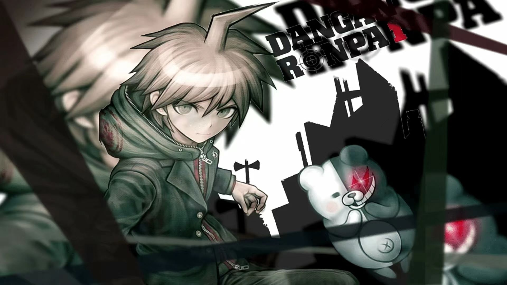

弹丸论破
《弹丸论破》（Danganronpa）是由Spike Chunsoft开发的一系列推理游戏。游戏以一所名为“希望之峰学园”的精英高中为背景，玩家将扮演一名新入学的学生，参与到一场致命的游戏中。以下是游戏的一些关键特点和背景：
游戏背景：希望之峰学园是一所特殊的学校，有各个领域的超高校级学生才能进入。玩家作为“超高校级的幸运者”，被选中进入这所学校。然而，等待他们的并不是光明的未来，而是一场生存游戏。
核心玩法：游戏的核心是“学级裁判”。当有杀人事件发生时，玩家需要通过搜集证据、参与辩论和推理来找出凶手。游戏结合了推理解谜和动作要素，提供了一种全新的游戏体验。
角色设定：游戏中的角色丰富多彩，每个角色都有自己独特的性格和背景故事。玩家在游戏中的互动和选择会影响游戏的发展和结局。
剧情设计：游戏的剧情紧凑，充满了悬念和反转。玩家在游戏中的每一步都充满了未知，需要不断的探索和推理来揭开真相。
游戏平台：《弹丸论破》系列最初在PSP平台上发布，后来还推出了PSV、Steam、Switch和Xbox等平台的版本。